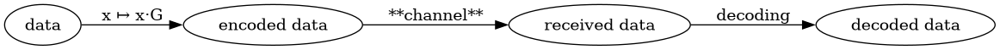

Bounds for block codes, continued
Let \(C \subset A^n\) be a block code, where \(q = |A|\), and suppose that \(d\) is the minimal distance of \(C\).
Recall that we showed that \(C\) “corrects up to \(t\) errors”, where \[t = \lfloor (d-1)/2 \rfloor.\]
And recall that \(A_q(n,d)\) is the maximal size of a code \(C \subset A^n\) with minimal distance \(d\).
Let \[\delta(m) = 1 + \dbinom{n}{1}(q-1) + \dbinom{n}{2}(q-1)^2 + \cdots + \dbinom{n}{m}(q-1)^m = \sum_{j=0}^m \dbinom{n}{j}(q-1)^j.\] The (closed) ball \(B_m(u)\) of radius \(m\) in \(A^n\) satisfies \(|B_m(u)| = \delta(m)\).
Recall that the Gilbert-Varshamov result gave in some sense a lower bound result for \(A_q(n,d)\); it showed that \[A_q(n,d) \cdot \delta(d) \ge q^n.\]
We now give an upper bound for \(A_q(n,d)\) known as the sphere-packing bound.
- Theorem (Sphere-packing bound)
- Let \(t = \lfloor (d-1)/2 \rfloor\). Then \[A_q(n,d) \cdot \delta(t) \le q^n.\]
- Proof
-
Let \(C \subset A^n\) be a code of minimal distance \(d\) with \(|C| = A_q(n,d)\).
Suppose that \(u,v \in C\), and suppose that \(w \in B_t(u) \cap B_t(v)\). Thus we have \[\operatorname{dist}(u,v) \le \operatorname{dist}(u,w) + \operatorname{dist}(w,v) \le 2t \le d-1.\]
Since \(d\) is the minimal distance of \(C\) it follows that \(u=v\). This shows that \[u \ne v \implies B_t(u) \cap B_t(v) = \emptyset.\]
Thus the union \(\displaystyle \bigcup_{u \in C} B_t(u)\) is disjoint, so that \[|\bigcup_{u \in C} B_t(u)| = |C| \cdot \delta(t).\]
Since \(\displaystyle \bigcup_{u \in C} B_t(u) \subseteq A^n\), the Theorem follows at once.
- Remark
-
A code is said to be perfect if it meets the sphere packing bound; i.e. if \(|C|\cdot \delta(t) = q^n\).
We’ll have some examples of perfect codes later; meanwhile note that to have a perfect code of length \(n\) and given \(t\), we need \(\delta(t) \mid q^n\). This doesn’t happen too often…:
def delta(n,q,m): return sum([ binomial(n,j) * (q-1)**j for j in range(m+1) ]) def test(n,q,t): return Mod(q^n,delta(n,q,t)) == 0 q = 2 t = 2 list(filter(lambda n: test(n,q,t),range(1,200))) => [1, 2, 5, 90] q = 2 t = 3 list(filter(lambda n: test(n,q,t), range(1,200))) => [1, 2, 3, 7, 23] q=3 t=2 list(filter(lambda n: test(n,q,t),range(1,200))) => [1, 2, 11] - Lemma (Plotkin Lemma)
- Let \(C \subset A^n\), \(|A|=q\), and suppose the maximal distance of \(C\) is \(d\). Then \[|C| \left( d + \dfrac{n}{q} - n \right) \le d.\]
- Proof
-
Fix \(1 \le j \le n\) and for each \(a \in A\) write \(\lambda_a\) for the number of times \(a\) appears as the \(j\)th coordinate of a codeword in \(C\).
i.e. \[\lambda_a = |\{(u_1,u_2,\cdots,u_n) \in C \mid u_j = a\}|.\]
Of course, we have \[(\clubsuit) \quad \sum_{a \in A} \lambda_a = |C|.\]
Moreover, \[(\diamondsuit) \quad \sum_{a \in A} \left(\lambda_a - \dfrac{|C|}{q}\right)^2 \ge 0\] since the sum of non-negative terms is non-negative.
Expanding each summand in \((\diamondsuit)\) and using \((\clubsuit)\) we see that \[\begin{align*} 0 \le& \sum_{a \in A} \left ( \lambda_a^2 - \dfrac{2|C|}{q} \lambda_a + \dfrac{|C|^2}{q^2} \right ) \\ =& \left(\sum_{a \in A} \lambda_a^2 \right) - \dfrac{2|C|}{q} \left(\sum_a \lambda_a\right) + \dfrac{|C|^2}{q} \\ =& \left(\sum_{a \in A} \lambda_a^2 \right) - \dfrac{2|C|^2}{q} + \dfrac{|C|^2}{q} \\ =& \left(\sum_{a \in A} \lambda_a^2 \right) - \dfrac{|C|^2}{q} \end{align*}\] Thus \[(\heartsuit) \quad \sum_{a \in a} \lambda_a^2 \ge \dfrac{|C|^2}{q}.\]
Now write \(\displaystyle S = \sum_{u,v \in C} \operatorname{dist}(u,v)\), and let \(S_j\) be the contribution that the \(j\)-th coordinate makes to this sum. More precisely, \[S_j = \sum_{a \in A} \lambda_a \left( |C| - \lambda_a \right).\] Of course, \[S = \sum_j S_j.\]
Using \((\clubsuit)\) and \((\heartsuit)\) we find \[\begin{align*} S_j &= \sum_{a \in A} \lambda_a |C| - \sum_{a \in A} \lambda_a^2 \\ &= |C|^2 - \sum_{a \in A} \lambda_a^2 \\ &\le |C|^2 - \dfrac{|C|^2}{q} \end{align*}\]
Finally, since \(d\) is the minimal distance of \(C\) we have \[d |C| ( |C|-1) \le S\] and on the other hand we have established \[S = \sum_j S_j \le n \left( |C|^2 - \dfrac{|C|^2}{q}\right)\]
Combining these inequalities (and canceling a factor of \(|C|\)) we find \[\begin{align*} & d\left( |C| - 1 \right) \le n |C| (1 - 1/q) \\ \implies & d|C| - n|C|(1 - 1/q) \le d \\ \implies & |C|\left(d - n + \dfrac{n}{q} \right) \le d; \end{align*}\] this completes the proof.
Asymptotics of codes
(sketch/motivation)
If we wish to send a large amount of data with short length codes, we have to cut up a string of \(n\) “bits” of data into strings of some fixed length \(n_0\).
If the probability of decoding the string of length \(n_0\) is \(p\), then the probability of decoding the string of length \(n\) is \(p^{n/n_0}\). For fixed \(n_0\), note that \[p^{n/n_0} \to 0 \quad \text{as $n \to \infty$}\]
On the other hand, Shanon’s Theorem promises us that we should be able to send the string of \(n\) bits through a channel with some given capacity \(\Lambda\) which encodes almost \(\Lambda n\) bits of information and then decode correctly with probability approaching \(1\).
Now, a proof of Shannon’s theorem e.g. for the binary symmetric channel uses the fact that the average number of errors which occur in the transmission of \(n\) bits is \((1-\phi)n\).
Thus, to satisfy Shannon’s Theorem, our code should be able to correct a number of errors that is linear in \(n\) – i.e. we want to construct codes of length \(n\) for which the minimal distance grows linearly with \(n\).
- Defn
- A sequence of asymptotically good codes is a sequence \(\{C_n\}\) where \(C_n\) is a code of length \(n\), dimension \(k(n)\) and minimal distance \(d(n)\) for which \(d(n)/n\) and \(k(n)/n\) are bounded away from zero (as \(n \to \infty\)).
In some sense, the goal of constructing asymptotically good codes hopefully makes clear the utility of the preceding result on bounds for codes.
Decoding
Let \(C\) be a (linear) \([n,k,d]_q\)-code.
The following diagram outlines components of usage of such a code for data transmission:

So, we begin with data \(\mathbf{x} \in \mathbb{F}_q^k\). We encode it using a generator matrix \(G\) for the code \(C\):
\[\mathbf{x} \mapsto \mathbf{x} \cdot G\]
Now, this vector in \(\mathbb{F}_q^n\) is somehow transmitted through the channel; the received data is a vector \(\mathbf{v}\in \mathbb{F}_q^n\), possible suffering transmission errors.
This leaves the decoding step: how do we hope to recover from \(\mathbf{v}\) the data vector \(\mathbf{x} \in \mathbb{F}_q^k\)?
Standard array decoding
Here is a fairly simple-to-describe procedure for decoding.
For each coset \(\mathbf{b}+ C\) in \(\mathbb{F}_q^n\), find an element with minimal weight.
Now, to decode the vector \(\mathbf{v}\), find the coset containing \(\mathbf{v}\), and write \(\mathbf{w}\) for the element (chosen previously) of minimal length.
Notice that \(\mathbf{v}- \mathbf{w}\in C\) (since both vectors are in \(C\)); we decode to this vector.
- Example
-
Let’s consider a \([5,2]_2\) code with \(k = \mathbb{F}_2\).
K = GF(2); V = VectorSpace(K,5) C= V.subspace([V([1,0,1,1,0]), V([0,1,1,0,1])]) W = V.subspace([V([0,0,1,0,0]), V([0,0,0,1,0]), V([0,0,0,0,1])]) def weight(v): r = [x for x in v if x != 0] return len(r) min([ weight(v) for v in C if v != 0]) => 3This confirms that the minimal weight is
d=3.# build the coset of C with representative v, and sort the vectors in order of # increasing weight def coset(v): c = [ v + c for c in C ] c.sort(key = lambda x: weight(x)) return list(c) # build the lookup array # rows are the cosets of C in V, vectors ordered by increasing weight # lookup = [ coset(w) for w in W ]Now we can perform nearest neighbor decoding. To decode the vector
w, we find the rowcof thelookuparray containingw, and returnw - c[0].def decode(w): c = [ x for x in lookup if w in x ][0] return w - c[0] # vectors in C are decoded to themselves, of course. e.g. [ (c,decode(c)) for c in C ] => [((0, 0, 0, 0, 0), (0, 0, 0, 0, 0)), ((1, 0, 1, 1, 0), (1, 0, 1, 1, 0)), ((2, 0, 2, 2, 0), (2, 0, 2, 2, 0)), ((0, 1, 1, 0, 1), (0, 1, 1, 0, 1)), ((1, 1, 2, 1, 1), (1, 1, 2, 1, 1)), ((2, 1, 0, 2, 1), (2, 1, 0, 2, 1)), ((0, 2, 2, 0, 2), (0, 2, 2, 0, 2)), ((1, 2, 0, 1, 2), (1, 2, 0, 1, 2)), ((2, 2, 1, 2, 2), (2, 2, 1, 2, 2))]We should be able to correct
(d-1)/2 = (3-1)/2 = 1error.# consider "error vectors" of weight 1 [ (e,[(c+e, decode(c+e), decode(c+e) == c) for c in C]) for e in V.basis()] => [((1, 0, 0, 0, 0), [((1, 0, 0, 0, 0), (0, 0, 0, 0, 0), True), ((2, 0, 1, 1, 0), (1, 0, 1, 1, 0), True), ((0, 0, 2, 2, 0), (2, 0, 2, 2, 0), True), ((1, 1, 1, 0, 1), (0, 1, 1, 0, 1), True), ((2, 1, 2, 1, 1), (1, 1, 2, 1, 1), True), ((0, 1, 0, 2, 1), (2, 1, 0, 2, 1), True), ((1, 2, 2, 0, 2), (0, 2, 2, 0, 2), True), ((2, 2, 0, 1, 2), (1, 2, 0, 1, 2), True), ((0, 2, 1, 2, 2), (2, 2, 1, 2, 2), True)]), ((0, 1, 0, 0, 0), [((0, 1, 0, 0, 0), (0, 0, 0, 0, 0), True), ((1, 1, 1, 1, 0), (1, 0, 1, 1, 0), True), ((2, 1, 2, 2, 0), (2, 0, 2, 2, 0), True), ((0, 2, 1, 0, 1), (0, 1, 1, 0, 1), True), ((1, 2, 2, 1, 1), (1, 1, 2, 1, 1), True), ((2, 2, 0, 2, 1), (2, 1, 0, 2, 1), True), ((0, 0, 2, 0, 2), (0, 2, 2, 0, 2), True), ((1, 0, 0, 1, 2), (1, 2, 0, 1, 2), True), ((2, 0, 1, 2, 2), (2, 2, 1, 2, 2), True)]), ((0, 0, 1, 0, 0), [((0, 0, 1, 0, 0), (0, 0, 0, 0, 0), True), ((1, 0, 2, 1, 0), (1, 0, 1, 1, 0), True), ((2, 0, 0, 2, 0), (2, 0, 2, 2, 0), True), ((0, 1, 2, 0, 1), (0, 1, 1, 0, 1), True), ((1, 1, 0, 1, 1), (1, 1, 2, 1, 1), True), ((2, 1, 1, 2, 1), (2, 1, 0, 2, 1), True), ((0, 2, 0, 0, 2), (0, 2, 2, 0, 2), True), ((1, 2, 1, 1, 2), (1, 2, 0, 1, 2), True), ((2, 2, 2, 2, 2), (2, 2, 1, 2, 2), True)]), ((0, 0, 0, 1, 0), [((0, 0, 0, 1, 0), (0, 0, 0, 0, 0), True), ((1, 0, 1, 2, 0), (1, 0, 1, 1, 0), True), ((2, 0, 2, 0, 0), (2, 0, 2, 2, 0), True), ((0, 1, 1, 1, 1), (0, 1, 1, 0, 1), True), ((1, 1, 2, 2, 1), (1, 1, 2, 1, 1), True), ((2, 1, 0, 0, 1), (2, 1, 0, 2, 1), True), ((0, 2, 2, 1, 2), (0, 2, 2, 0, 2), True), ((1, 2, 0, 2, 2), (1, 2, 0, 1, 2), True), ((2, 2, 1, 0, 2), (2, 2, 1, 2, 2), True)]), ((0, 0, 0, 0, 1), [((0, 0, 0, 0, 1), (0, 0, 0, 0, 0), True), ((1, 0, 1, 1, 1), (1, 0, 1, 1, 0), True), ((2, 0, 2, 2, 1), (2, 0, 2, 2, 0), True), ((0, 1, 1, 0, 2), (0, 1, 1, 0, 1), True), ((1, 1, 2, 1, 2), (1, 1, 2, 1, 1), True), ((2, 1, 0, 2, 2), (2, 1, 0, 2, 1), True), ((0, 2, 2, 0, 0), (0, 2, 2, 0, 2), True), ((1, 2, 0, 1, 0), (1, 2, 0, 1, 2), True), ((2, 2, 1, 2, 0), (2, 2, 1, 2, 2), True)])]On the other hand, we shouldn’t expect to correct 2 errors:
# consider an "error vector" with weight 2 f = V([0,1,0,1,0]) [ (c+f, decode(c+f), decode(c+f) == c) for c in C ] => [((0, 1, 0, 0, 1), (0, 1, 1, 0, 1), False), ((1, 1, 1, 1, 1), (1, 1, 2, 1, 1), False), ((2, 1, 2, 2, 1), (2, 1, 0, 2, 1), False), ((0, 2, 1, 0, 2), (0, 2, 2, 0, 2), False), ((1, 2, 2, 1, 2), (1, 2, 0, 1, 2), False), ((2, 2, 0, 2, 2), (2, 2, 1, 2, 2), False), ((0, 0, 2, 0, 0), (0, 0, 0, 0, 0), False), ((1, 0, 0, 1, 0), (1, 0, 1, 1, 0), False), ((2, 0, 1, 2, 0), (2, 0, 2, 2, 0), False)]
Standard array decoding is pretty costly, though. The array we construct amounts to a list of \(q^{nk} \times q^k\) vectors each of length \(n\).
Syndrome decoding
Let \(C\) as before an \([n,k,d]_q\)-code, and suppose that \(H\) is a check matrix for \(C\).
If the vector \(\mathbf{v}\) is sent, and the error pattern \(\mathbf{e}\) appears, so that \(\mathbf{v}+ \mathbf{e}\) is received, we observe that \[H(\mathbf{v}+ \mathbf{e})^T = H\mathbf{e}^T.\]
So: we create a lookup table whose entries are pairs \((H.\mathbf{e}^T,\mathbf{e})\) for \(\mathbf{e}\in V\) with weight \(\mathbf{e}\) \(\le (d-1)/2\); the first entry is an element of \(\mathbb{F}_q^{n-k}\).
To decode a received vector \(\mathbf{v}\), we compute its syndrome \(\mathbf{w}= H \mathbf{v}^T\). If no more than \((d-1)/2\) errors occured, we will find an entry \((\mathbf{w},\mathbf{e})\) in the table.
Now we decode to \(\mathbf{v}- \mathbf{e}\).
- Example:
-
We consider
K = GF(3); V = VectorSpace(K,5) C= V.subspace([V([1,0,1,1,0]), V([0,1,1,0,1])]) # generator matrix G = MatrixSpace(K,2,5).matrix(C.basis()) A = MatrixSpace(K,2,3).matrix([b[2:5] for b in G]) # check matrix H=block_matrix([[-A.transpose(),MatrixSpace(K,3,3).one()]], subdivide=False) def weight(v): r = [x for x in v if x != 0] return len(r) min([ weight(v) for v in C if v != 0]) => 3We create a lookup table: for each vector \(v \in \mathbb{F}_q^n\) of
weight <= 1; thekeysof the lookup table are the syndromes \(H v^T\).lookup = { tuple(H*v):v for v in V if weight(v) < 2 } lookup => {(0, 0, 0): (0, 0, 0, 0, 0), (2, 2, 0): (1, 0, 0, 0, 0), (1, 1, 0): (2, 0, 0, 0, 0), (2, 0, 2): (0, 1, 0, 0, 0), (1, 0, 1): (0, 2, 0, 0, 0), (1, 0, 0): (0, 0, 1, 0, 0), (2, 0, 0): (0, 0, 2, 0, 0), (0, 1, 0): (0, 0, 0, 1, 0), (0, 2, 0): (0, 0, 0, 2, 0), (0, 0, 1): (0, 0, 0, 0, 1), (0, 0, 2): (0, 0, 0, 0, 2)}Decoding a vector \(\mathbf{v}\) is easy: compute the syndrome \(H.\mathbf{v}^T\) and use it to locate the error vector \(e\) in the lookup table. Then return \(\mathbf{v}- e\).
def decode(v): return v-lookup[tuple(H*v)]Once again we can check that vectors in \(C\) are decoded as themselves:
[ (decode(c), c==decode(c)) for c in C ] => [((0, 0, 0, 0, 0), True), ((1, 0, 1, 1, 0), True), ((2, 0, 2, 2, 0), True), ((0, 1, 1, 0, 1), True), ((1, 1, 2, 1, 1), True), ((2, 1, 0, 2, 1), True), ((0, 2, 2, 0, 2), True), ((1, 2, 0, 1, 2), True), ((2, 2, 1, 2, 2), True)]Again, we should be able to correct
(d-1)/2 = (3-1)/2 = 1error.# consider "error vectors" of weight 1 [ (e,[(c+e, decode(c+e), decode(c+e) == c) for c in C]) for e in V.basis()] => [((1, 0, 0, 0, 0), [((1, 0, 0, 0, 0), (0, 0, 0, 0, 0), True), ((2, 0, 1, 1, 0), (1, 0, 1, 1, 0), True), ((0, 0, 2, 2, 0), (2, 0, 2, 2, 0), True), ((1, 1, 1, 0, 1), (0, 1, 1, 0, 1), True), ((2, 1, 2, 1, 1), (1, 1, 2, 1, 1), True), ((0, 1, 0, 2, 1), (2, 1, 0, 2, 1), True), ((1, 2, 2, 0, 2), (0, 2, 2, 0, 2), True), ((2, 2, 0, 1, 2), (1, 2, 0, 1, 2), True), ((0, 2, 1, 2, 2), (2, 2, 1, 2, 2), True)]), ((0, 1, 0, 0, 0), [((0, 1, 0, 0, 0), (0, 0, 0, 0, 0), True), ((1, 1, 1, 1, 0), (1, 0, 1, 1, 0), True), ((2, 1, 2, 2, 0), (2, 0, 2, 2, 0), True), ((0, 2, 1, 0, 1), (0, 1, 1, 0, 1), True), ((1, 2, 2, 1, 1), (1, 1, 2, 1, 1), True), ((2, 2, 0, 2, 1), (2, 1, 0, 2, 1), True), ((0, 0, 2, 0, 2), (0, 2, 2, 0, 2), True), ((1, 0, 0, 1, 2), (1, 2, 0, 1, 2), True), ((2, 0, 1, 2, 2), (2, 2, 1, 2, 2), True)]), ((0, 0, 1, 0, 0), [((0, 0, 1, 0, 0), (0, 0, 0, 0, 0), True), ((1, 0, 2, 1, 0), (1, 0, 1, 1, 0), True), ((2, 0, 0, 2, 0), (2, 0, 2, 2, 0), True), ((0, 1, 2, 0, 1), (0, 1, 1, 0, 1), True), ((1, 1, 0, 1, 1), (1, 1, 2, 1, 1), True), ((2, 1, 1, 2, 1), (2, 1, 0, 2, 1), True), ((0, 2, 0, 0, 2), (0, 2, 2, 0, 2), True), ((1, 2, 1, 1, 2), (1, 2, 0, 1, 2), True), ((2, 2, 2, 2, 2), (2, 2, 1, 2, 2), True)]), ((0, 0, 0, 1, 0), [((0, 0, 0, 1, 0), (0, 0, 0, 0, 0), True), ((1, 0, 1, 2, 0), (1, 0, 1, 1, 0), True), ((2, 0, 2, 0, 0), (2, 0, 2, 2, 0), True), ((0, 1, 1, 1, 1), (0, 1, 1, 0, 1), True), ((1, 1, 2, 2, 1), (1, 1, 2, 1, 1), True), ((2, 1, 0, 0, 1), (2, 1, 0, 2, 1), True), ((0, 2, 2, 1, 2), (0, 2, 2, 0, 2), True), ((1, 2, 0, 2, 2), (1, 2, 0, 1, 2), True), ((2, 2, 1, 0, 2), (2, 2, 1, 2, 2), True)]), ((0, 0, 0, 0, 1), [((0, 0, 0, 0, 1), (0, 0, 0, 0, 0), True), ((1, 0, 1, 1, 1), (1, 0, 1, 1, 0), True), ((2, 0, 2, 2, 1), (2, 0, 2, 2, 0), True), ((0, 1, 1, 0, 2), (0, 1, 1, 0, 1), True), ((1, 1, 2, 1, 2), (1, 1, 2, 1, 1), True), ((2, 1, 0, 2, 2), (2, 1, 0, 2, 1), True), ((0, 2, 2, 0, 0), (0, 2, 2, 0, 2), True), ((1, 2, 0, 1, 0), (1, 2, 0, 1, 2), True), ((2, 2, 1, 2, 0), (2, 2, 1, 2, 2), True)])]And again we don’t expect to correct more than a single error with this code.
# consider an "error vector" with weight 2 f = V([0,1,1,0,0]) [ (c+f, decode(c+f), decode(c+f) == c) for c in C ] => [((0, 1, 1, 0, 0), (0, 1, 1, 0, 1), False), ((1, 1, 2, 1, 0), (1, 1, 2, 1, 1), False), ((2, 1, 0, 2, 0), (2, 1, 0, 2, 1), False), ((0, 2, 2, 0, 1), (0, 2, 2, 0, 2), False), ((1, 2, 0, 1, 1), (1, 2, 0, 1, 2), False), ((2, 2, 1, 2, 1), (2, 2, 1, 2, 2), False), ((0, 0, 0, 0, 2), (0, 0, 0, 0, 0), False), ((1, 0, 1, 1, 2), (1, 0, 1, 1, 0), False), ((2, 0, 2, 2, 2), (2, 0, 2, 2, 0), False)]